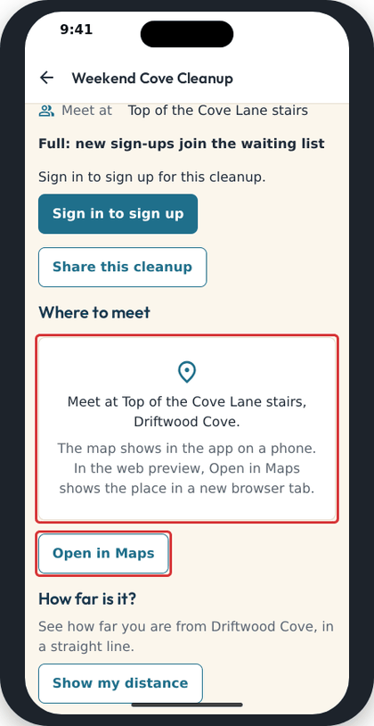

📍 Lesson 6.3: Location and Maps
On the morning of a cleanup, two questions matter to a volunteer: where exactly do we meet, and how does the crew know I came? Today Shoreline Crew answers both. A map shows the meeting point with a pin (and, if the volunteer already said yes to location, their own blue dot), one press hands the place to the phone's map app for directions, and at the beach the organizer's code checks the volunteer in. Along the way you decide what a phone's position can honestly prove, and what it cannot.
🎯 Learning Objectives
By the end of this lesson, you will be able to:
- Read a phone's position as it really is: coordinates with an accuracy radius, a time, and a way to be faked, and pick the accuracy a feature needs
- Design an on-the-day check-in: decide what proves a volunteer was there (the organizer's code, not the phone's location), and say honestly what happens offline
- Build the check-in as a typed modal route with React Hook Form, a Zod schema and a mutation, and put the API's field message on the right field
- Show a map with react-native-maps (a pin, a starting region, the blue dot only after a yes) and say what Expo Go, development builds and the web preview each need, including the Google Maps key for Android builds
- Give the web preview a stand-in for a native-only library with a
.web.tsxfile, and hand a place to the phone's map app with a link
📦 Code for this lesson
Starting code: lesson-22-start.zip · Finished code: lesson-22-end.zip. Each folder has a README with the commands to run it.
In This Lesson
👋 Welcome: Where We Meet, and Who Came
If you did last lesson's "Before the Next Lesson" task, you watched your phone's blue dot at a place you know. It probably started as a wide pale circle, wandered a little, and settled within a few meters of you after a while, or never quite did between tall buildings or under a cliff. Keep that picture in mind: it decides half of today's design.
Shoreline Crew already knows where you are, if you allow it: Lesson 6.1's How far is it? panel works out your distance from the beach. Today the app uses places in two more ways:
- A map of the meeting point. "Gravel pull-out on Highway 1" means little to someone who has never been there. The cleanup screen gets a real map with a pin, your blue dot when you have already allowed location, and an Open in Maps button that hands the place to the phone's own map app for directions.
- Checking in. On the day, at the meeting point, the organizer reads out a four-digit code. The volunteer types it into a Check in screen, shoreline-api marks their sign-up
attended, and the cleanup screen says so. Organizers count who came, and the volunteer's "You have helped at N cleanups" goes up.
Why it matters for your work: location features are everywhere (deliveries, ride sharing, field work, events, fitness), and so are their two classic failures: trusting the phone's position for things it cannot prove, and maps that work in development and show a blank gray grid in the store build. Knowing where those lines are is what separates a demo from an app people rely on.
🌱 Half of this lesson happens outdoors
A map's tiles, a blue dot settling, a code read out in the wind: none of it runs on your desk. The web preview checks every screen and every answer from the API, and Expo Go on your phone shows the real map. If the map on your phone looks different from what the lesson describes, or your dot sits in the sea, you have not done anything wrong: you have met the real world. Note it in your journal; that is how location features get good.
🛰️ Where Am I, Really?
Lesson 6.1 read the phone's position once and only used two numbers from it. A position from expo-location carries more, and the rest is what tells you how far to trust it:
import * as Location from 'expo-location';
// After a yes to the location permission (Lesson 6.1's gate)
const here = await Location.getCurrentPositionAsync({ accuracy: Location.Accuracy.Balanced });
const { latitude, longitude, accuracy } = here.coords;
// latitude 36.9791 (degrees north), longitude -122.1185 (degrees east; negative is west)
// accuracy 35: the phone is probably within 35 meters of that point (null when unknown)
console.log(latitude, longitude, accuracy);
console.log(here.timestamp); // when the phone measured it, in milliseconds since 1970
console.log(here.mocked); // true when the position comes from a mock provider or a spoofing tool(The numbers in the comments are an example.) A position is not a point; it is a circle. accuracy is its radius in meters, the pale circle around a map's blue dot. The phone builds it from whatever it has: GPS satellites (meters, outdoors, after a while), Wi-Fi networks and cell towers (tens of meters to kilometers, fast, also indoors). The accuracy option you pass says how hard the phone should try:
| Option | Roughly (expo-location's own words) | Good for |
|---|---|---|
Accuracy.Lowest, Low | three kilometers, one kilometer | "Which town?" |
Accuracy.Balanced | one hundred meters | "How far is the beach?" (Lesson 6.1) |
Accuracy.High, Highest | ten meters, the best it can | A pin you drop where you stand |
Accuracy.BestForNavigation | the best, plus extra sensors | Turn-by-turn directions |
More accuracy costs time and battery: the phone may need many seconds to get a GPS fix, and longer indoors. When a rough answer is enough and speed matters, getLastKnownPositionAsync() returns the phone's most recent position at once (or null), and watchPositionAsync() keeps sending new positions while something on screen needs them, like a run tracker. Shoreline Crew only ever needs one position, now and then, so Lesson 6.1's single getCurrentPositionAsync stays.
Two facts about positions shape the rest of this lesson:
- The circle can be big exactly where cleanups happen. Under a cliff, in a creek valley or between harbor buildings, a phone may report 50 to 500 meters of accuracy, or a position that jumps. A rule like "you must be within 100 meters" would refuse a volunteer who is standing on the right spot.
- The position comes from the phone, and the phone belongs to the volunteer. Android has developer options for "mock location" apps, and tools exist for iPhones too;
mockedcatches some of them, not all. Whatever the app checks on the phone, the person holding it can change.
📱 On your phone
The accuracy figures are expo-location's documented targets, not guarantees, and what your phone reports depends on its hardware, the sky and the buildings around it. In the web preview, Chrome gives whatever position it has (or the one you set in DevTools, Sensors, as in Lesson 6.1).
🔑 What Proves You Were There
shoreline-api's check-in is one request: POST /api/events/:id/check-in with { "code": "…" }. The API only accepts it on the day of the cleanup, from a volunteer with a confirmed spot, with the code the organizer has (organizers see it when they load the cleanup; nobody else does). The answer is the sign-up, now attended. Try it with curl as Theo (dev-volunteer is the API's test token for him; in PowerShell, write curl.exe):
curl -i -X POST http://localhost:4000/api/events/e17/check-in -H "Authorization: Bearer dev-volunteer" -H "Content-Type: application/json" -d "{\"code\": \"1234\"}"Expected output
HTTP/1.1 400 Bad Request
cache-control: no-store
content-type: application/json; charset=utf-8
...
{
"error": "validation_failed",
"message": "Some fields need attention.",
"fieldErrors": {
"code": [
"That code does not match. Ask the organizer for today's code."
]
}
}A wrong code is a 400 with a message for the code field, the same fieldErrors shape as the sign-in and the debris log. The wrong day and a missing spot are 409s with the API's words: "Check-in opens on the day of the cleanup." and "You need a confirmed spot to check in." Notice what the request does not contain: any position. The API decides with the code alone.
Should the app add a rule of its own, "only check in within 300 meters of the meeting point"? Lesson 6.2 even hinted at it. Here is the comparison that decided it for Shoreline Crew:
| The organizer's code (Shoreline Crew) | The phone's location | |
|---|---|---|
| Who checks it | The server: the app cannot change the answer | The phone: whoever holds it can change it (a mock location, or simply edited code) |
| Under a cliff, in a creek valley | Works | A big accuracy circle may refuse someone standing on the right spot |
| Volunteer said no to location | Works (Lesson 6.1: a no is an answer) | Cannot check in at all |
| What it proves | They heard the organizer at the meeting point | The phone said it was near; nothing about the person |
| Cost | The organizer reads out four digits | Every check-in asks for the location permission |
So the code is the proof, and the location stays what it was in Lesson 6.1: a helpful extra the volunteer can choose. A check that lives only on the phone is a convenience, never a rule; rules belong on the server (the same "screen checks are kindness, API checks are rules" from Lesson 5.4). If Shoreline Crew ever needed location as evidence, the phone would have to send the position to the server, which would decide, and the purpose string, the privacy details in the stores (Lesson 9.4) and the volunteers' trust would all have to cover that. Exercise 3 lets you show the distance on the check-in screen as a hint, without making it a gate.
💡 Mental model: the sign-in sheet on the clipboard
At every cleanup, the leader stands at the meeting point with a clipboard. You walk up, say the word of the day, and your name gets a tick. Nobody asks to see your phone's map; the tick means you were standing in front of the leader. The code is that word of the day, the API is the clipboard, and attended is the tick. Your blue dot is for finding the clipboard, not for signing it.
📶 Checking In With One Bar of Signal
Lesson 5.5 put debris logs in a persisted queue, so a log written with no signal is sent hours later. Should check-ins wait in that queue too? Look at what the API does with a late one:
- Only on the day. A check-in queued at 9:00 and sent the next morning gets "Check-in opens on the day of the cleanup." It can never succeed late.
- A wrong code needs the volunteer now. If they mistyped it, they must hear so while the organizer is still there to read it again, not from the queue in the evening.
- The organizer needs to see it now. The point of checking in is that the crew knows, at the meeting point, who is on the beach.
So Shoreline Crew does not queue check-ins. The check-in is a TanStack Query mutation, like signing up in Lesson 5.2, and with no connection it does what those do: it pauses, keeps its place in memory, and is sent the moment the phone is back online, while the app stays open. The screen says so ("No connection: your check-in is sent when you are back online. Keep Shoreline Crew open until then."). If the app is closed before then, the check-in is gone, and that is honest: the volunteer checks in again, or tells the organizer, who can mark them present from Shoreline Crew HQ (the web course's roster). Retrying is safe because the API's check-in is idempotent: a second check-in with the right code leaves the sign-up attended and keeps the first time.
🗺️ Maps on a Phone
On the web you might embed a map with a JavaScript library drawing tiles into a <div>. A phone already has a map view built in, fast and familiar: Apple's MapKit on iPhones, Google Maps on Android. react-native-maps puts that native view on your screen as a component, <MapView>, with children like <Marker> for pins:
import MapView, { Marker } from 'react-native-maps';
<MapView
style={{ height: 220 }} // no size, no map
initialRegion={{ latitude: 36.979, longitude: -122.1183, latitudeDelta: 0.01, longitudeDelta: 0.01 }}
>
<Marker coordinate={{ latitude: 36.979, longitude: -122.1183 }} title="Gravel pull-out on Highway 1" />
</MapView>A region is a center plus how much of the world fits on screen: latitudeDelta is the height of the map in degrees of latitude (0.01 is about 1.1 km), longitudeDelta the width. initialRegion sets where the map starts and then lets the volunteer pan and zoom; region would hold the map at that spot on every render. showsUserLocation draws the blue dot. Which map does each place give you?
| Expo Go | Development or store build (Module 9) | Web preview | |
|---|---|---|---|
| iPhone | Apple Maps, no setup | Apple Maps, no key (Google Maps on iPhone needs its own key and provider={PROVIDER_GOOGLE}) | No map view: react-native-maps has no web version (see the next section) |
| Android phone | Google Maps, no setup (Expo Go carries a key) | Google Maps needs your own API key, from a Google Cloud project |
Expo's documentation says react-native-maps is in Expo Go and needs "no additional setup" there, which is why this lesson works on your phone today. The Android build is the catch, and it is worth knowing now so it never surprises you in Module 9: an Android build of your own app shows Google Maps only with a key you create in the Google Cloud console (enable "Maps SDK for Android", create an API key, restrict it to your app's package name and signing certificate). Google's console asks for a billing account when you set up a project; check Google's current pricing for the Maps SDKs before you ship. The key goes into the app through react-native-maps' config plugin. Measured with npx expo config --type introspect on a copy of the project, with a placeholder key in plugins:
[
"react-native-maps",
{
"androidGoogleMapsApiKey": "YOUR_ANDROID_KEY"
}
]Expected output (the matching lines)
...
'$': {
'android:name': 'com.google.android.geo.API_KEY',
'android:value': 'YOUR_ANDROID_KEY'
...The plugin writes the key into the Android manifest of your build; without the entry, it removes it. Shoreline Crew does not add the entry in this lesson: Expo Go needs none, and a key belongs to you, not to a course download. A Google Maps key for a phone app is not a secret in the way a password is (it ships inside the app, where anyone can read it), which is exactly why Google lets you restrict it to your app. Lesson 9.1 moves configuration to app.config.ts, where a key can come from an environment variable instead of sitting in app.json.
One more thing showsUserLocation does, read in react-native-maps' own documentation for the prop: "This will cause iOS to ask for location permissions." The map would knock on the gate by itself, with no explanation first. Shoreline Crew's map therefore reads the permission (reading never asks, Lesson 6.1) and shows the dot only after a yes the volunteer gave in How far is it?. The map is useful without it: the pin is the point.
📱 On your phone
The map tiles, the pin's callout, the blue dot and "no setup in Expo Go" come from Expo's and react-native-maps' documentation and could not be run here (no phone, no Android emulator on this course's machine). The JavaScript was bundled for Android and iOS with npx expo export, which proves it compiles for both, not that the map draws. Step 7 has you check it on your phone.
🖥️ A Map in the Web Preview
react-native-maps draws native map views, and a browser has none. Its package even says so in a file of its own, src/MapView.web.ts: on the web, MapView is react-native-web's "unimplemented view". That is not enough, though: the rest of the package (the marker, the shapes) still defines native components when it is imported, and that is what breaks the web build (see Common Mistakes).
You have the tool for this since Lesson 2.5 and used it again in 6.2: a platform file. SiteMap.tsx is the phone's map; SiteMap.web.tsx, next to it, is what the web bundle uses instead, and it never imports react-native-maps. The two export the same component with the same props, so the cleanup screen imports @/components/SiteMap and never knows which one it got. For the web, Shoreline Crew shows the place in words, in a box the size of the map, and the Open in Maps button (on every platform) opens a real map in a new browser tab.
Why not a web map library in the .web.tsx file? You could, and a real product with a web version might. For a web preview that exists to check screens on your computer, a box that says where to meet and a link to a full map does the job without a second map library to learn and keep up to date.
"Hand the place to the map app" is a link with the place in it, opened with Linking.openURL, and each platform has its own form:
| Platform | Link | Opens |
|---|---|---|
| iPhone | https://maps.apple.com/?ll=36.979,-122.1183&q=… | Apple Maps, with a pin and the label |
| Android phone | geo:36.979,-122.1183?q=36.979,-122.1183(…) | The map app that handles geo: links (usually Google Maps), or a choice |
| Web preview | https://www.openstreetmap.org/?mlat=36.979&mlon=-122.1183#map=16/… | OpenStreetMap in a new tab (measured) |
One measured detail: in the web preview, expo-linking's openURL replaces the page (its web code sets window.location), which would leave the app and, with the web preview's memory-only session (Lesson 4.3), sign the volunteer out. React Native's own Linking.openURL opens a new tab on the web and does the same as expo-linking on a phone, so the button uses that one.
⚠️ Common Mistakes
The first, second and fourth mistakes were made on purpose in a copy of the finished project and measured; the third comes from react-native-maps' documentation, because only an iPhone can show it.
⚠️ Importing react-native-maps where the web preview can see it
Put <MapView> straight into the cleanup screen (or into SiteMap.tsx with no SiteMap.web.tsx next to it), and the phone is happy, but the web build is not. npx expo export --platform web printed:
Expected output
env: load .env.local
env: export EXPO_PUBLIC_API_URL
Using src/app as the root directory for Expo Router.
React Compiler enabled
Starting Metro Bundler
Server rendering is enabled. Learn more: https://docs.expo.dev/router/web/server-rendering/
λ Bundled 1563ms node_modules/expo/node_modules/@expo/cli/node_modules/@expo/router-server/node/render.js (1250 modules)
Web Bundled 1922ms node_modules/expo-router/entry.js (1234 modules)
Metro error: (0 , r(...).codegenNativeComponent) is not a function
TypeError: (0 , r(...).codegenNativeComponent) is not a function
...In the web preview (npx expo start, then w), the page showed a full-screen error with the same message, pointing at react-native-maps' NativeComponentGooglePolygon.ts (measured). Read it as "a native component was defined where there is no native": codegenNativeComponent exists in React Native, not in react-native-web. The error is raised when the package is loaded, and Expo Router's web build loads every route to render the pages on the server, so the whole web build stops, not only the cleanup screen. The fix is a .web.tsx file that never imports the package, as in Step 6.
⚠️ Checking in without refreshing the sign-ups
It is easy to write the mutation with only a mutationFn. Measured in the web preview with onSettled removed from checkInMutation: the right code was sent, shoreline-api answered 200 and Theo's sign-up was attended on the server, and the screen did not change at all: still the form, still 6544 in the field, still Check in. The volunteer presses it again and again. The screen draws from the sign-ups in the cache (the tide chart from Lesson 1.1), so the mutation must say they are out of date: onSettled invalidates ['signups'], the active query fetches again, and the "You are checked in" face appears by itself.
⚠️ Turning on the blue dot for everyone
// Don't: on an iPhone, the map asks for location by itself, with no reason given
<MapView style={styles.map} initialRegion={region} showsUserLocation />react-native-maps documents that showsUserLocation "will cause iOS to ask for location permissions". That is the phone's question appearing over a cleanup's screen the moment it opens, before anyone asked for anything: Lesson 6.1's first mistake, asking at the wrong moment, hidden inside a prop. And on iPhone, a "Don't Allow" there is final for How far is it? too. Show the dot only when the permission step already says 'granted'. (On Android, react-native-maps only checks the permission and draws no dot without it. Neither behavior can be seen in the web preview.)
⚠️ A new route that TypeScript has never heard of
Create src/app/check-in/[id].tsx and link to it while Metro is stopped, run npx tsc --noEmit, and typed routes (Lesson 4.1) object:
Expected output
src/app/check-in/[id].tsx:34:11 - error TS2339: Property 'id' does not exist on type 'String'.
34 const { id } = useLocalSearchParams<'/check-in/[id]'>();
~~
src/app/check-in/[id].tsx:34:39 - error TS2344: Type '"/check-in/[id]"' does not satisfy the constraint 'RoutePath'.
34 const { id } = useLocalSearchParams<'/check-in/[id]'>();
~~~~~~~~~~~~~~~~
src/components/SignupPanel.tsx:101:23 - error TS2322: Type '"/check-in/[id]"' is not assignable to type '"/" | RelativePathString | ExternalPathString | "/before-you-go" | "/sign-in" | "/_sitemap" | "/(tabs)" | "/(tabs)/logbook" | "/logbook" | ... 6 more ... | "/log/[id]"'.
101 <Link href={{ pathname: '/check-in/[id]', params: { id: event.id } }} asChild>
~~~~~~~~
Found 3 errors in 2 files.
Errors Files
2 src/app/check-in/[id].tsx:34
1 src/components/SignupPanel.tsx:101The code is right; the list of routes is old. Expo Router writes it to .expo/types/router.d.ts while npx expo start runs, and the new screen is not in it yet, so '/check-in/[id]' is not a RoutePath. Start Metro (it updates the file within seconds of seeing the new route), then run tsc again: nothing. Never edit router.d.ts by hand; it is rewritten every time.
🛠️ Project: Check In and Find the Beach
You teach the client to check in, give the code a schema and the change a mutation, build the Check in modal, let the cleanup screen show the day's button and the checked-in state (and the code, to organizers), then install react-native-maps and add Where to meet with its web stand-in and Open in Maps. Work in shoreline-crew, with shoreline-api running in a second terminal and Metro running (npx expo start) unless a step says otherwise.
Step 1: Check in, in the client, the schema and a mutation (15 min)
In src/api/client.ts, import the API's CheckInRequest type and add checkIn before postLog:
ApiErrorBody,
+ CheckInRequest,
CleanupEvent,
// ...
+/**
+ * POST /api/events/:id/check-in: on the day of the cleanup, with the organizer's code. Your
+ * sign-up comes back as 'attended'. A wrong code is an ApiError 400 with a message for the code
+ * field; the wrong day, or no confirmed spot, an ApiError 409 with the API's words.
+ */
+export function checkIn(eventId: string, code: string): Promise<Signup> {
+ const body: CheckInRequest = { code };
+ return sendJSON('POST', `/events/${encodeURIComponent(eventId)}/check-in`, body, isSignup);
+}
+
/** POST /api/events/:id/logs: send a debris log. The API answers 201 with the saved log, or 200It reuses sendJSON and the isSignup check from Lesson 5.2: the answer is your sign-up, now attended. A 400 arrives as an ApiError whose fieldErrors holds the API's message for code. In src/api/schemas.ts, after the sign-in schema:
export type SignInData = z.output<typeof signInSchema>;
+
+// ---------------------------------------------------------------- check in
+
+export const checkInSchema = z.object({
+ // The organizer reads out a 4-digit code at the meeting point. Kept as text: it is a code,
+ // not a number to count with
+ code: z
+ .string()
+ .trim()
+ .regex(/^\d{4}$/, 'Enter the 4-digit code the organizer reads out.'),
+});
+
+/** What the check-in form holds and sends (one string) */
+export type CheckInValues = z.input<typeof checkInSchema>;
- The code stays a string, like the debris log's counts in Lesson 5.4:
z.coerce.number()would accept"6544.0"and turn an empty box into0. A code is four characters to compare, not a quantity. - The schema checks the shape (four digits) so a typo is caught on the phone with no request. Only the API knows the right code: its message, "That code does not match…", comes from the server in Step 2.
Then the mutation, in src/api/mutations.ts:
-import { cancelSignup, getEventLogs, postSignup } from '@/api/client';
+import { cancelSignup, checkIn, getEventLogs, postSignup } from '@/api/client';
import { mySignupsQuery, queryClient } from '@/api/queries';
// ...
/**
+ * Check in at the beach with the day's code. Waits for the API: only it knows the code. Offline,
+ * it waits for the connection like the others (in memory: it is not saved on the phone).
+ */
+export function checkInMutation(eventId: string) {
+ return mutationOptions({
+ mutationFn: (code: string) => checkIn(eventId, code),
+ // Your sign-up is now 'attended': My cleanups, the cleanup's screen and this form read it
+ onSettled: () => queryClient.invalidateQueries({ queryKey: ['signups'] }),
+ });
+}
+
+/**
* Copy the debris logs you sent from past cleanups into the logbook on this phone (new).The factory takes the cleanup's id, so the form only passes the code. Returning the invalidation from onSettled keeps the mutation pending until the sign-ups have been fetched again, as signUpMutation does: when the button stops saying Checking in…, the screen already knows.
Step 2: The Check in modal (20 min)
Create src/app/check-in/[id].tsx. It follows the debris log's shape from Lessons 5.4 and 5.5: a guest face, a face per sign-up state, and the form:
import { zodResolver } from '@hookform/resolvers/zod';
import { useMutation, useQuery } from '@tanstack/react-query';
import { Link, router, useLocalSearchParams } from 'expo-router';
import { useForm } from 'react-hook-form';
import { View } from 'react-native';
import { ApiError, describeError } from '@/api/client';
import { checkInMutation } from '@/api/mutations';
import { mySignupsQuery, viewerId } from '@/api/queries';
import { type CheckInValues, checkInSchema } from '@/api/schemas';
import type { CleanupEvent } from '@/api/types';
import { AppText } from '@/components/AppText';
import { Button } from '@/components/Button';
import { ControlledField } from '@/components/ControlledField';
import { EmptyState } from '@/components/EmptyState';
import { ErrorView } from '@/components/ErrorView';
import { FormScreen } from '@/components/FormScreen';
import { LoadingView } from '@/components/LoadingView';
import { Screen } from '@/components/Screen';
import { useSession } from '@/hooks/useSession';
import { formatDate, toDateString } from '@/utils/format';
// Back to wherever the check-in was opened from (or to the Cleanups tab after a link)
function leave() {
if (router.canGoBack()) {
router.back();
} else {
router.replace('/');
}
}
// Check in at the beach: /check-in/e17 (a modal over the cleanup's screen)
export default function CheckInScreen() {
const { id } = useLocalSearchParams<'/check-in/[id]'>();
const session = useSession();
// Open to everyone, like the debris log: a guest signs in on top, and lands back here
if (session === null) {
return (
<Screen scroll edges={['bottom', 'left', 'right']}>
<AppText variant="heading" accessibilityRole="header">
Sign in to check in
</AppText>
<AppText>Check-in is for volunteers with a spot at the cleanup.</AppText>
<Link href="/sign-in" asChild>
<Button label="Sign in" variant="primary" />
</Link>
</Screen>
);
}
return <CheckInForCleanup id={id} viewer={viewerId(session)} />;
}
// Your sign-up for this cleanup decides the face: the form, "checked in", or why not
function CheckInForCleanup({ id, viewer }: { id: string; viewer: string }) {
const signups = useQuery(mySignupsQuery(viewer));
if (signups.data === undefined) {
return (
<Screen scroll edges={['bottom', 'left', 'right']}>
{signups.isError ? (
<ErrorView message={describeError(signups.error)} onRetry={() => signups.refetch()} />
) : (
<LoadingView label="Checking your sign-ups…" />
)}
</Screen>
);
}
const mine = signups.data.find(
({ eventId, status }) => eventId === id && status !== 'cancelled',
);
if (mine?.status === 'attended') {
return <CheckedIn event={mine.event} />;
}
// The API's own rules, said before anyone types a code
const message =
mine === undefined || mine.status !== 'confirmed'
? 'You need a confirmed spot to check in.'
: mine.event.date !== toDateString(new Date())
? `Check-in opens on the day of the cleanup: ${formatDate(mine.event.date)}.`
: null;
if (mine === undefined || message !== null) {
return (
<Screen scroll edges={['bottom', 'left', 'right']}>
<EmptyState message={message ?? ''} action={{ label: 'Go back', onPress: leave }} />
</Screen>
);
}
return <CheckInForm event={mine.event} />;
}
function CheckInForm({ event }: { event: CleanupEvent }) {
const checkInNow = useMutation(checkInMutation(event.id));
const {
control,
handleSubmit,
setError,
formState: { errors, isSubmitting },
} = useForm({
resolver: zodResolver(checkInSchema),
defaultValues: { code: '' },
mode: 'onTouched',
});
async function submit({ code }: CheckInValues) {
try {
// When it works, the sign-ups are fetched again and say 'attended': the screen changes
// to "You are checked in" by itself
await checkInNow.mutateAsync(code);
} catch (error) {
// 400: a wrong code, with the API's message for the code field
const forCode = error instanceof ApiError ? error.fieldErrors?.code?.[0] : undefined;
if (forCode !== undefined) {
setError('code', { message: forCode }, { shouldFocus: true });
} else {
setError('root.server', { message: describeError(error) });
}
}
}
const send = handleSubmit(submit);
return (
<FormScreen>
<View>
<AppText variant="heading" accessibilityRole="header">
{event.title}
</AppText>
<AppText variant="muted">Meet at {event.meetingPoint}</AppText>
</View>
<AppText>
At the meeting point, the organizer reads out the code for the day. Type it here to let
the crew know you are on the beach.
</AppText>
<ControlledField
control={control}
name="code"
label="Code for the day"
inputMode="numeric" // digits only
maxLength={4}
autoComplete="off"
enterKeyHint="go"
onSubmitEditing={() => send()}
/>
{checkInNow.isPaused && (
<AppText variant="muted" accessibilityLiveRegion="polite">
No connection: your check-in is sent when you are back online. Keep Shoreline Crew open
until then.
</AppText>
)}
{errors.root?.server !== undefined && (
<AppText variant="error" accessibilityRole="alert">
{errors.root.server.message}
</AppText>
)}
<Button
label={isSubmitting ? 'Checking in…' : 'Check in'}
variant="primary"
disabled={isSubmitting}
onPress={() => send()}
/>
</FormScreen>
);
}
// Checked in (now, or earlier on this phone or another one)
function CheckedIn({ event }: { event: CleanupEvent }) {
return (
<Screen scroll edges={['bottom', 'left', 'right']}>
<AppText variant="heading" accessibilityRole="header" accessibilityLiveRegion="polite">
You are checked in
</AppText>
<AppText>Thank you for coming to {event.title}. Have a good cleanup!</AppText>
<Button label="Done" variant="primary" onPress={leave} />
{/* The next thing a volunteer does on the day: this modal makes way for the log */}
<Link href={{ pathname: '/log/[id]', params: { id: event.id } }} replace asChild>
<Button label="Log what you collected" />
</Link>
</Screen>
);
}- Faces before a form.
CheckInForCleanupreads your sign-ups (the same cached query as My cleanups) and says the API's own rules before anyone types: no confirmed spot, or not the day yet (with the date). Alreadyattendedgoes straight toCheckedIn, whichever phone checked in. - The server's answer on the right field.
submitawaitsmutateAsyncso it can catch the "no". A400with a message forcodebecomes that field's error (and focus goes back to it); anything else (a409, no answer, an ended sign-in) goes to the form's root error indescribeError's words. The sign-in screen in Lesson 5.4 used one root error for both; a single field makes the field the better place. - Success needs no code here. When the mutation settles, the sign-ups say
attended,CheckInForCleanuprenders again and showsCheckedIn. The cache is the single source of truth, so a check-in made on another phone looks the same. - The keyboard (Lesson 5.4):
inputMode="numeric"brings up digits,maxLength={4}stops a fifth,enterKeyHint="go"labels the return key, andonSubmitEditingsends. The iPhone's number pad has no return key at all, which is why the Check in button is always there too. - Offline:
checkInNow.isPausedshows the honest line from Checking In With One Bar of Signal, and the button keeps saying Checking in… until the paused mutation is sent. CheckedIn's Log what you collected usesreplace: the check-in modal makes way for the log modal instead of stacking a second one on it.
Register the modal in src/app/_layout.tsx, next to the debris log, and open to everyone for the same reason (a guest following a link is asked to sign in on the screen itself):
<Stack.Screen name="log/[id]" options={{ presentation: 'modal', title: 'Log debris' }} />
+ {/* Check in at the beach on the day, with the organizer's code. Open to everyone too */}
+ <Stack.Screen name="check-in/[id]" options={{ presentation: 'modal', title: 'Check in' }} />
{/* Only for people who are not signed in: signing in takes this screen away */}Step 3: Check in on the cleanup screen, and the code for organizers (10 min)
Lesson 5.2 left a gap in SignupPanel (Lesson 5.4 noted it): mine only knew confirmed and waitlisted, so after a check-in the panel would forget you had a spot and offer Sign up again. In src/components/SignupPanel.tsx:
- // Your sign-up for this cleanup, if you hold a spot or wait for one
+ // Your sign-up for this cleanup, if you hold a spot, wait for one, or have checked in
const mine = signups.data.find(
({ eventId, status }) =>
- eventId === event.id && (status === 'confirmed' || status === 'waitlisted'),
+ eventId === event.id &&
+ (status === 'confirmed' || status === 'waitlisted' || status === 'attended'),
);
+ const today = toDateString(new Date());
const availability = getAvailability(event);
// The API takes sign-ups for scheduled cleanups from today on
- const open = availability.kind !== 'closed' && event.date >= toDateString(new Date());
+ const open = availability.kind !== 'closed' && event.date >= today;
// A full cleanup still takes sign-ups: they join the waiting list
// ...
const canLog =
- event.date <= toDateString(new Date()) &&
+ event.date <= today &&
signups.data.some(
// ...
{mine !== undefined && (
- <>
- <AppText accessibilityLiveRegion="polite">
- {mine.status === 'confirmed'
+ <AppText accessibilityLiveRegion="polite">
+ {mine.status === 'attended'
+ ? 'You are checked in. Thank you for coming!'
+ : mine.status === 'confirmed'
? 'You are signed up. See you on the beach!'
: 'You are on the waiting list. You get a spot if someone cancels.'}
- </AppText>
- <Button
- label={cancel.isPending ? 'Cancelling…' : 'Cancel my sign-up'}
- disabled={cancel.isPending}
- onPress={() => {
- signUp.reset();
- cancel.mutate(mine.id);
- }}
- />
- </>
+ </AppText>
+ )}
+ {/* On the day, at the beach: the organizer's code checks you in */}
+ {mine?.status === 'confirmed' && event.date === today && (
+ <Link href={{ pathname: '/check-in/[id]', params: { id: event.id } }} asChild>
+ <Button label="Check in" variant="primary" />
+ </Link>
+ )}
+ {/* Checked in, you were there: there is nothing left to cancel */}
+ {mine !== undefined && mine.status !== 'attended' && (
+ <Button
+ label={cancel.isPending ? 'Cancelling…' : 'Cancel my sign-up'}
+ disabled={cancel.isPending}
+ onPress={() => {
+ signUp.reset();
+ cancel.mutate(mine.id);
+ }}
+ />
)}attendedjoinsmine, with its own sentence, and no Cancel my sign-up: you came; there is nothing left to cancel.- Check in shows only on the cleanup's day and only for a confirmed spot, the same rule the modal says in words.
todayis computed once for the three rules that need it.
And organizers: shoreline-api adds checkInCode to a cleanup only for an organizer's sign-in (the property is optional in CleanupEventDetail). In src/app/cleanups/[id].tsx, above the panel:
)}
+ {/* Only organizers get the code from the API: they read it out at the meeting point */}
+ {event.checkInCode !== undefined && (
+ <AppText>
+ Check-in code for the day: <Text style={styles.strong}>{event.checkInCode}</Text>. Read it
+ out at the meeting point.
+ </AppText>
+ )}
{/* Sign up, or cancel: the volunteer's part of this screen */}The app does not decide who sees the code: the API does, by leaving it out for everyone else. The cache keeps it safe too, because eventQuery's key includes the viewer (Lesson 5.2): Maya's answer is never shown to the next person who signs in on the same phone.
Step 4: Check in, in the web preview (10 min)
With Metro running, press w, sign in as Theo (theo.nakamura@example.com, shoreline-demo) and open today's cleanup, Tide Pool Morning Cleanup. Under "You are signed up" there is now Check in; Weekend Cove Cleanup, in a few days, has none. Press it, type 12 and press Tab: "Enter the 4-digit code the organizer reads out." Then type 1234 and press Check in:

To learn the real code, be the organizer for a minute: sign out on the Profile tab, sign in as Maya (maya.okafor@example.com, same password), open the cleanup: "Check-in code for the day: 6544. Read it out at the meeting point." (The code is fixed for each sample cleanup, so yours is the same.) Sign out, sign in as Theo again, check in with 6544, and press Done:

Open the My cleanups tab: "You have helped at" counts one more cleanup. Then restart shoreline-api (or curl -X POST http://localhost:4000/api/_reset) to put Theo's sign-up back for next time. The "No connection" line appears when the phone itself knows it is offline: measured by switching the browser offline with the code typed in, the check-in waited with that line on screen, and went through as soon as the browser was back online.
Step 5: Install react-native-maps and draw the map (15 min)
Stop Metro with Ctrl+C (also Ctrl+C on a Mac), then:
npx expo install react-native-mapsExpected output
env: load .env.local
env: export EXPO_PUBLIC_API_URL
› Installing 1 SDK 58.0.0 compatible native module using npm
> npm install
added 2 packages, and audited 816 packages in 3s
167 packages are looking for funding
run `npm fund` for details
8 moderate severity vulnerabilities
To address issues that do not require attention, run:
npm audit fix
To address all issues (including breaking changes), run:
npm audit fix --force
Run `npm audit` for details."1 SDK 58.0.0 compatible native module": Expo picked react-native-maps 1.29.11, the version SDK 58 expects. No "Added config plugin", and nothing to add today: the plugin's only options are the Google Maps keys from Maps on a Phone, which Expo Go does not need. Create src/components/SiteMap.tsx:
import * as Location from 'expo-location';
import { StyleSheet } from 'react-native';
import MapView, { Marker } from 'react-native-maps';
import type { Site } from '@/api/types';
import { usePermission } from '@/hooks/usePermission';
import { radius } from '@/theme/spacing';
type SiteMapProps = {
site: Site;
meetingPoint: string; // the pin's title: where the crew meets
};
// Where the crew meets, on the phone's own map (Apple Maps on an iPhone, Google Maps on Android).
// The web preview uses SiteMap.web.tsx instead: react-native-maps has no web version.
export function SiteMap({ site, meetingPoint }: SiteMapProps) {
// Reading the answer asks nobody (Lesson 6.1). The blue dot only with a yes from before:
// showsUserLocation on its own would make an iPhone ask, with no reason given
const location = usePermission(Location.useForegroundPermissions());
return (
<MapView
style={styles.map}
// Where the map starts. The volunteer can pan and zoom from there (region would hold it still)
initialRegion={{
latitude: site.latitude,
longitude: site.longitude,
latitudeDelta: 0.01, // about a kilometer from top to bottom
longitudeDelta: 0.01,
}}
showsUserLocation={location.step === 'granted'}
accessibilityLabel={`Map of ${site.name}, with a pin at the meeting point: ${meetingPoint}`}
>
<Marker coordinate={site} title={meetingPoint} description={site.name} />
</MapView>
);
}
const styles = StyleSheet.create({
map: {
height: 220, // a map has no size of its own: without one it is 0 high
borderRadius: radius.picture,
},
});usePermission(Location.useForegroundPermissions())is Lesson 6.1's step, used only to read: no gate, no question. The dot appears for a volunteer who said yes in How far is it?, and the pin works for everyone.<Marker coordinate={site}>: aSitehaslatitudeandlongitude, which is all aLatLngis, so TypeScript accepts it as it is (the same reasondistanceKmtook it in Lesson 6.1). Tapping the pin shows itstitleanddescription.- The map's
accessibilityLabelsays what a sighted volunteer sees at a glance, for VoiceOver and TalkBack. The meeting point is also written on the screen, so nobody depends on the map. - A map has no natural size: without a
height(orflex), it has none, and nothing shows.
Do not open the web preview yet: the next step gives it a file of its own first (Common Mistakes shows what happens otherwise).
Step 6: The web preview's stand-in, and Where to meet (10 min)
Create src/components/SiteMap.web.tsx, with the same props and no react-native-maps:
import { StyleSheet, View } from 'react-native';
import type { Site } from '@/api/types';
import { AppText } from '@/components/AppText';
import { Icon } from '@/components/Icon';
import { createThemedStyles } from '@/hooks/useTheme';
import { radius, spacing } from '@/theme/spacing';
type SiteMapProps = {
site: Site;
meetingPoint: string;
};
// The web preview's SiteMap. react-native-maps draws the phone's own map views, which a browser
// does not have (importing it here stops the web build), so the same place goes in words instead.
export function SiteMap({ site, meetingPoint }: SiteMapProps) {
const themed = useStyles();
return (
<View style={[styles.box, themed.box]}>
<Icon name="place" size={32} />
<AppText style={styles.center}>
Meet at {meetingPoint}, {site.name}.
</AppText>
<AppText variant="muted" style={styles.center}>
The map shows in the app on a phone. In the web preview, Open in Maps shows the place in a
new browser tab.
</AppText>
</View>
);
}
const styles = StyleSheet.create({
box: {
height: 220, // the same space the map takes on a phone
alignItems: 'center',
justifyContent: 'center',
gap: spacing.sm,
padding: spacing.md,
borderRadius: radius.picture,
borderWidth: 1,
},
center: {
textAlign: 'center',
},
});
const useStyles = createThemedStyles(({ colors }) =>
StyleSheet.create({
box: {
backgroundColor: colors.surface,
borderColor: colors.border,
},
}),
);Add the map link to src/utils/links.ts, the home of Lesson 4.4's cleanup links:
import * as Linking from 'expo-linking';
+import { Platform } from 'react-native';
import type { CleanupEvent } from '@/api/types';
+import type { Coordinates } from '@/utils/distance';
import { formatDate } from '@/utils/format';
// ...
}
+
+/**
+ * A link that opens a place in the phone's own map app, for directions: Apple Maps on an iPhone,
+ * whichever map app handles geo: links on an Android phone, OpenStreetMap in a browser
+ */
+export function mapLink({ latitude, longitude }: Coordinates, label: string): string {
+ const at = `${latitude},${longitude}`;
+ const name = encodeURIComponent(label);
+ return Platform.select({
+ ios: `https://maps.apple.com/?ll=${at}&q=${name}`,
+ android: `geo:${at}?q=${at}(${name})`,
+ default: `https://www.openstreetmap.org/?mlat=${latitude}&mlon=${longitude}#map=16/${latitude}/${longitude}`,
+ });
+}Platform.select (Lesson 2.5) picks the link for this platform, with default for the web. encodeURIComponent keeps spaces and commas in the label from breaking the address. Then Where to meet on the cleanup screen, between the share button and How far is it?:
import { useState } from 'react';
-import { Share, StyleSheet, Text, View } from 'react-native';
+import { Linking, Share, StyleSheet, Text, View } from 'react-native';
// ...
import { SignupPanel } from '@/components/SignupPanel';
+import { SiteMap } from '@/components/SiteMap';
import { StatusBadge } from '@/components/StatusBadge';
// ...
import { formatDate, toDateString } from '@/utils/format';
-import { cleanupLink, cleanupMessage } from '@/utils/links';
+import { cleanupLink, cleanupMessage, mapLink } from '@/utils/links';
// ...
)}
+ <AppText variant="heading" accessibilityRole="header">
+ Where to meet
+ </AppText>
+ <SiteMap site={site} meetingPoint={event.meetingPoint} />
+ {/* Directions are the map app's job: hand it the place. React Native's Linking, not
+ expo-linking's: in the web preview it opens a new tab instead of leaving the app */}
+ <Button
+ label="Open in Maps"
+ onPress={() => Linking.openURL(mapLink(site, `${event.meetingPoint}, ${site.name}`))}
+ />
{/* Asks for the location only when the volunteer wants the distance */}Start Metro, press w, open Weekend Cove Cleanup and scroll to Where to meet:

Press Open in Maps: OpenStreetMap opens in a new tab with the meeting point in the middle, and Shoreline Crew stays where it was in the first tab.
Step 7: The map and the check-in on your phone, then check and commit (15 min)
Open the app in Expo Go (shoreline-api running --host and .env.local on your computer's network address, as in Lesson 5.1):
- The map. Open Weekend Cove Cleanup and scroll to Where to meet: a map around Driftwood Cove with a pin (Apple Maps on an iPhone, Google Maps on Android). Tap the pin: "Top of the Cove Lane stairs". Drag and pinch: the map moves freely, because it only started at
initialRegion. - The blue dot. If you allowed location in Lesson 6.1, your dot is on the map (zoom out: the sample beaches sit on the California coast). If you did not, there is no dot and no question. Press Show my distance and allow it; the next time the cleanup screen opens, the dot is there.
- Open in Maps. On an iPhone, Apple Maps opens with a pin; on Android, Google Maps (or a choice of map apps). Come back with the back gesture or the app switcher: Shoreline Crew is where you left it.
- Check in as Theo at Tide Pool Morning Cleanup with
6544. Watch the keyboard: digits only, and on an iPhone no return key, so use the button.
📱 On your phone
The map, the pin, the dot, the map apps and the keyboards come from Expo's, react-native-maps' and the platforms' documentation and could not be run here. If the map is a gray grid with a Google logo on Android in Expo Go, write it down with your Expo Go version: Expo Go is supposed to carry its own key. In a development or store build (Module 9), a gray grid means the Google Maps key is missing or restricted to a different app.
Then the checks:
npx tsc --noEmit
npx expo lintExpected output
env: load .env.local
env: export EXPO_PUBLIC_API_URLtsc prints nothing, and expo lint only the two env: lines. Commit your work.
🧭 For your own app
If your final project uses places, write down three answers. What does the position decide, and could the person holding the phone change it (if it matters, the server must decide)? What does the feature do after a no to location (a typed address, a list of places, a code)? And does it need a map at all, or would a well-written address and an Open in Maps button do? A map is the most expensive way to show one point.
✅ Project Completion Checklist
- ☐
checkInin the client,checkInSchema(four digits, kept as text) andcheckInMutation(refreshes the sign-ups) - ☐ The Check in modal shows the right face for every sign-up and day, puts a wrong code's message on the field, and says honestly when it is waiting for a connection
- ☐ The cleanup screen offers Check in on the day, says "You are checked in" afterwards (with no Cancel), and shows organizers the day's code
- ☐ react-native-maps installed with
npx expo install;SiteMapshows the meeting point, with the blue dot only after an earlier yes - ☐
SiteMap.web.tsxkeeps the web preview working, and Open in Maps hands the place to the map app (a new tab in the web preview) - ☐ You checked in in the web preview and saw the map on your phone;
tscandexpo lintare clean, and the work is committed
🏋️ Hands-on Exercises
Optional, but recommended: each one takes five to fifteen minutes. Undo code changes afterwards; the next lesson starts from the project as Step 7 left it.
🏋️ Exercise 1: Predict the face
Without running anything, say what /check-in/[id] shows in each case:
- Theo opens
/check-in/e08: he has a confirmed spot at Weekend Cove Cleanup, three days from now. - A volunteer on the waiting list for today's cleanup follows a link to its check-in.
- Theo checked in on his tablet this morning and now opens the check-in on his phone.
- Someone who is not signed in follows the link, then signs in.
- Theo types
6543and presses Check in.
💡 Hint
Walk through CheckInForCleanup from the top, then submit for the last case. Which ones send a request at all?
✅ Solution
(1) "Check-in opens on the day of the cleanup:" with the date, and Go back; no form, no request (measured). (2) "You need a confirmed spot to check in." A waiting-list sign-up is not confirmed. (3) "You are checked in": his sign-ups, fetched on this phone, already say attended. (4) "Sign in to check in"; after signing in, the sign-in modal closes and the screen underneath shows the right face for their sign-up (measured for Theo: the form). (5) The schema is happy (four digits), the API answers 400, and "That code does not match. Ask the organizer for today's code." appears under the field (measured with 1234). Only cases 4 (after signing in, a sign-ups request) and 5 reach the API.
🏋️ Exercise 2: Checked in on My cleanups
After Theo checks in, today's cleanup disappears from Coming up on the My cleanups tab: Lesson 5.2's list only keeps confirmed and waitlisted sign-ups. Keep today's checked-in cleanup in the list, with a Checked in badge in the success tone and no Cancel button.
💡 Hint
Find the comingUp filter in src/app/(tabs)/my-cleanups.tsx, and the place where the row chooses between the "Signed up" and "Waiting list" badges.
✅ Solution
Replace the two filters with one that lets attended through when the cleanup is today (today is already there):
const comingUp = signups.data
.filter(
({ status, event }) =>
((status === 'confirmed' || status === 'waitlisted') && event.date >= today) ||
(status === 'attended' && event.date === today),
)
.reverse();In row, the badge becomes a three-way choice (an attended sign-up would otherwise fall into the "Waiting list" branch): <Badge label="Checked in" tone="success" /> for attended, and the Cancel button is hidden for it, the same rule as SignupPanel. "You have helped at N cleanups" already counts it.
🏋️ Exercise 3: The distance as a hint, not a gate (Stretch)
Volunteers sometimes go to the wrong beach (Otter Creek and Driftwood Cove are a few kilometers apart). Show Lesson 6.1's How far is it? panel on the check-in form, under "Meet at", so a volunteer can check they are in the right place. The code must still be enough to check in, whatever the panel says, and nothing may ask for location until the volunteer presses Show my distance.
💡 Hint
DistancePanel needs a Site, and the sign-up's event is a plain CleanupEvent without one. Which query from Lesson 5.2 returns the cleanup with its site, and is it already in the cache when the volunteer comes from the cleanup screen?
✅ Solution
In CheckInForm, read the cleanup with its site and show the panel once it is there:
const session = useSession();
const cleanup = useQuery(eventQuery(event.id, viewerId(session)));
// ...
{cleanup.data !== undefined && <DistancePanel site={cleanup.data.site} />}Coming from the cleanup screen, eventQuery's answer is already cached, so the panel appears at once. The panel only informs: submit does not look at it, so a volunteer under a cliff with a 400-meter circle, or one who said no to location, still checks in with the code. If you were tempted to disable Check in when the distance is large, reread What Proves You Were There.
🎯 Quick Quiz
🎯 Check Your Understanding
Question 1: Why does Shoreline Crew check volunteers in with the organizer's code instead of the phone's location?
Question 2: On the beach with no signal, Theo types the right code and presses Check in, then closes Shoreline Crew before the signal comes back. What happens to his check-in?
Question 3: After adding <MapView> to a screen, the web preview shows "codegenNativeComponent is not a function". What is the fix?
Question 4: The map works in Expo Go on an Android phone, but in your own Android build it is an empty gray grid. What is the most likely cause?
Question 5: Why does SiteMap pass showsUserLocation only when the permission step says 'granted'?
❓ Common Questions at This Stage
Could the app check volunteers in by itself when they arrive?
That is geofencing: expo-location can watch for entering a region (startGeofencingAsync) even while the app is in the background. It needs the "Always" location permission that Lesson 6.1 turned off, a background task (expo-task-manager), a development build rather than Expo Go for testing (per Expo's documentation), and a good reason in both stores' reviews. It would also make the phone's position the proof, which What Proves You Were There argued against. For a weekly cleanup, four digits read out by a person are simpler, fairer and more private.
What about expo-maps?
Expo has its own maps package, expo-maps (SDK 58 lists version 58.0.11), built on the newer Apple Maps (SwiftUI) and Google Maps (Compose) libraries. According to Expo's documentation it needs iOS 17 or later, a development build for Google Maps on Android, and it has no web version either. The course uses react-native-maps because it runs in Expo Go today and is the library you will meet in most existing apps; the ideas (a region, markers, the key for Android builds, a .web.tsx stand-in) carry over. Check expo-maps' current status in Expo's documentation before you choose for a new app.
Why not a picture of the map instead of a map view?
A static map image (one picture of the area with a pin) is light and works on the web too, but it comes from a map service that needs an API key and usually billing, and putting that key in an app or a web page is a problem of its own. Shoreline Crew already has a photo of each beach from the API; the real map lives on the phone, and Open in Maps covers everything else.
The organizer forgot to read out the code. Now what?
Organizers see the code on the cleanup screen in the phone app (Step 3) and in Shoreline Crew HQ, the web course's app, which can also mark a volunteer present on the roster directly. The phone app is for volunteers; it does not try to do the organizer's job.
Can I show the map in dark mode?
Apple Maps follows the phone's appearance by itself, according to Apple's documentation, and react-native-maps has a userInterfaceStyle prop for iOS to force one. Google Maps on Android takes a style (customMapStyle, a JSON list of colors) made with Google's styling tools. Check both on your phone before relying on them; they are outside what the web preview can show.
🌟 Going Further: Bonus Challenge
Put every upcoming cleanup on one map. Add a Map switch to the Cleanups tab that replaces the list with a MapView holding one Marker per cleanup (use the sites from sitesQuery for the coordinates), each marker's callout leading to that cleanup's screen (react-native-maps' onCalloutPress, then router.push). Choose a starting region that fits all six beaches (the smallest and largest latitudes and longitudes give you the center and the deltas). The web preview needs its own stand-in again: what is the most useful thing a web version of "all cleanups on a map" can show without a map?
📓 Learning Journal
Take five to ten minutes and add today's entry to your journal:
- Key concepts you learned today
- Techniques that clicked (and the ones that have not, yet)
- Questions or confusion to look up or bring to the next session
- Ideas to try on your own
- Progress and feelings: how did this lesson go for you?
✍️ This lesson's prompt: Think of two apps on your phone that use your location: one where the location decides something (a delivery, a ride, a game, a check-in) and one where it only helps you. For each, what would happen if the position were 300 meters off, or faked? Who checks it, the phone or a server? Then write one sentence on what made you choose the code for Shoreline Crew's check-in, in your own words.
📝 Lesson Summary
🎓 Key Takeaways
- A position is a circle, not a point: coordinates plus an
accuracyradius, a time and amockedflag; pick the accuracy a feature needs, and expect big circles under cliffs and between buildings - What the phone reports, the person holding it can change: a check on the phone is a convenience, a rule belongs on the server, so Shoreline Crew checks in with the organizer's code and keeps the location as an optional help
- A check-in is a mutation that refreshes the sign-ups; offline it pauses in memory (not queued: it only works on the day, and a wrong code needs the volunteer now), and the screen says so
- react-native-maps shows the phone's own map (Apple Maps, Google Maps) with a region and markers; Expo Go needs no setup, your own Android builds need a Google Maps key through its config plugin, and
showsUserLocationmakes an iPhone ask, so show the dot only after a yes - A native-only library needs a
.web.tsxstand-in or it stops the web build; directions are the map app's job, reached with a link per platform
| If you want to… | Go to |
|---|---|
| Set up maps in Expo, including the Google Maps keys | Expo: MapView (react-native-maps) |
| Look up every MapView and Marker prop | react-native-maps on GitHub |
| Read about positions, accuracy and geofencing | Expo: Location |
| Compare Expo's own maps package | Expo: Maps |
| Create and restrict a Google Maps key | Google: Maps SDK for Android, API key |
🏆 What You've Accomplished
- Volunteers check in at the beach with the organizer's code, and the app knows they came
- Every face of the check-in says the API's rules before and after a request, with a wrong code's message on the field
- The cleanup screen shows where to meet on a real map, with directions one press away
- The web preview keeps working with a stand-in for a native-only library
- You can explain what a phone's position can prove, and what it cannot
🔭 Looking Ahead
Volunteers can now find the beach and say they came. In Lesson 6.4: Notifications, Shoreline Crew makes sure they do not forget to come: a local reminder before each cleanup they signed up for, scheduled on the phone, through the same permission step (notifications need a yes too), and an honest look at what push notifications from a server would need.
📋 Before the Next Lesson
- Do Step 7 on your phone (the map, the dot, Open in Maps, the check-in) and commit your work
- Open your phone's notification settings and look at two apps: one whose reminders you like, one you have silenced. What was different about when and how often they spoke to you?
- Write today's journal entry
🌱 Encouragement for the Journey
The most important code you wrote today is a decision, not a component: what counts as proof. Experienced developers get this wrong all the time, because a location check looks so easy to add and so convincing in a demo. You also met a library that breaks a whole platform when imported, and fixed it with a file name. If maps, regions and deltas still feel like a lot of new words, that is fine: open your map app, pinch, and watch the region change. It is the same idea, under your thumb.